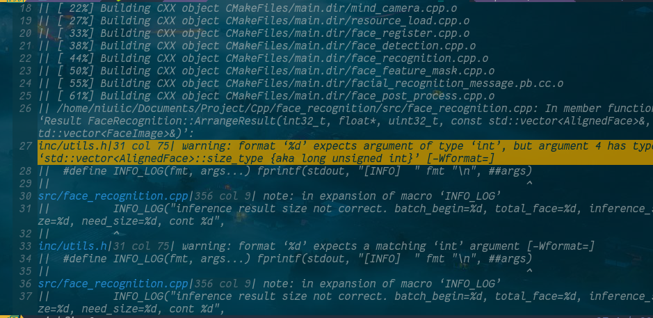

Vim Quickfix
本文主要介绍 vim quickfix 的使用与优化。
什么是 quickfix
quickfix 属于 vim 的高级功能，该功能在主流 IDE 或者编辑器中都有集成。
简单的说，quickfix 就是搜集编译器的输出信息，然后定位错误与警告位置，提供直接跳转功能。可以说有了完善的 quickfix 功能的 vim 编辑器才是真正的编辑器之神。
如何使用 quickfix
首先来了解一下 quickfix 的工作流程。
第一步，设定要执行的命令，也就是编译、运行程序的命令。可以在 vim 中通过命令设置。如设置命令为 make，
:set makeprg=make。第二步，执行命令
:make。注意该 make 是 vim 的命令，而不是 shell 中的 make 命令。此时，开始执行命令并且将输出送到 quickfix 窗口。第三步，使用
:copen打开 quickfix 窗口。可以看到刚才的输出内容。假设输出内容如下所示。

可以看到，图中蓝色部分为文件名，之后的为行和列，再后面的为相关信息。
第四步，获取信息之后，跳转到出错位置。vim 提供了
:cnext、:cprev、:cfirst、:clast等命令在各个错误之间跳转。也可以借助其他插件，如 vim-clap 对 quickfix 内容进行检索跳转。也可以将光标移动到 quickfix 窗口的文件位置处，键入 enter 进行跳转。第五步，修改完所有错误后，关闭 quickfix 窗口，可以使用
:cclose。
优化 quickfix
外观
使用:copen打开的 quickfix 窗口较小，不利于查看，可以使用:copexx，如:copen25，指定窗口所占的行数，改变窗口大小。
快捷键
可以参考以下快捷键设置。
au VimEnter * :set makeprg=make
nnoremap <silent><nowait> <space>qs :<C-u>set makeprg=
nnoremap <silent><nowait> <space>qo :<C-u>cope25<CR>
nnoremap <silent><nowait> <space>qm :<C-u>make<CR>
nnoremap <silent><nowait> <space>qc :<C-u>cclose<CR>
nmap <A-j> :cnext<CR>
nmap <A-k> :cprev<CR>
nmap <A-g> :cfirst<CR>
nmap <A-G> :clast<CR>
let g:which_key_map1.q = {
\ 'name' : '+quickfix',
\ 's' : 'set compile cmd',
\ 'o' : 'open quickfix window',
\ 'm' : 'make',
\ 'c' : 'close quickfix window'
\}异步
quickfix 默认同步执行，也就是说执行:make后，直到任务结束，你将无法使用 vim。在任务执行时间较长的情况下，这是很不利的。因此需要做出优化。
当前最好的解决方案：使用asynctasks.vim插件。该插件可参考的配置如下。安装请参考官方文档。
nnoremap <silent><nowait> <space>sR :<C-u>:AsyncTask project-run<CR>
nnoremap <silent><nowait> <space>sB :<C-u>:AsyncTask project-build<CR>
nnoremap <silent><nowait> <space>sb :<C-u>:AsyncTask file-build<CR>
nnoremap <silent><nowait> <space>sr :<C-u>:AsyncTask file-run<CR>
nnoremap <silent><nowait> <space>st :<C-u>:AsyncTaskList<CR>
nnoremap <silent><nowait> <space>se :<C-u>:AsyncTaskEdit<CR>
nnoremap <silent><nowait> <space>sE :<C-u>:AsyncTaskEdit!<CR>
nnoremap <silent><nowait> <space>sg :<C-u>:AsyncTask git<CR>
let g:asyncrun_rootmarks = ['.git', '.svn', '.root', '.project', '.hg']
let g:asynctasks_term_pos = 'bottom'
let g:asynctasks_term_rows = 10 " 设置纵向切割高度
let g:asynctasks_term_cols = 80 " 设置横向切割宽度
let g:which_key_map1.s = {
\ 'name' : '+asynctasks',
\ 'R' : 'run project',
\ 'B' : 'build project',
\ 'b' : 'build file',
\ 'r' : 'run file',
\ 'e' : 'edit config',
\ 'E' : 'edit global config',
\ 't' : 'show task list',
\}
let g:asynctasks_config_name = '.git/task.ini'下面说明如何使用该插件。
使用:AsyncTaskEdit编辑配置文件，比如
[git]
command=git add . && git commit -m $(?commit context) && proxychains git pull origin $(?merge branch) && proxychains git push -u origin $(?commit branch)
cwd=<VIM_ROOT>
output=terminal该文件具体编辑方法可以参考官方文档。以上配置设定了一个 git 任务，可以使用:AsyncTask git执行该任务，其中$(?)的部分是在执行时由用户输入的。将output设置为quickfix即可将内容输出到 quickfix 窗口。
该插件可以实现异步的 quickfix 功能，但它的功能远不止这点，建议深入挖掘。
修改
假设一下（真实情况应当不会出现），你犯了 100 个错，辛辛苦苦修改完了 99 个，但是剩下一个居然找不到了。这事可能发生吗？是的，很有可能。因为默认情况下，quickfix 并不会因为你修改了一个错误自动把错误消除，如果你要在 100 个错误里找 1 个，那自然是很费事的。
机灵的程序猿很快想出了绝妙的主意：我可以再执行一遍，重新生成信息。想法很不错，不过没准 n 个小时就过去了。
目前这方面暂时没有较好的插件（在 neovim 下都无法达到预想的效果）。不过可以通过以下方案来实现。
首先，可以设置快捷键。
nnoremap <silent><nowait> <space>qw :<C-u>write! build.log<CR>
nnoremap <silent><nowait> <space>qe :<C-u>set modifiable<CR>在进入 quickfix 窗口后，使用set modifiable，让 quickfix 可修改。修改完成后使用write! filename保存。这里默认了文件名为build.log。
然后，可以在 asynctask 插件中设置一个全局的加载文件到 quickfix 的任务。
[load-quickfix]
command=bat ./build.log
cwd=<VIM_ROOT>
output=quickfix这里为了方便，直接指定了文件名，如果需要更加具有通用性，可以设置在执行任务时手动输入文件路径。
在以上配置下，只要从项目根目录进入 vim，就不会出现 log 文件路径出错的问题。
quickfix 进阶：骚操作
vim quickfix 相比 IDE 的 quickfix 功能有更高的灵活度，关键就在于可以执行任意 shell 命令，包括 shell 脚本。
于是，quickfix 有了无限可能。下面将以跨设备编译调试作为一个场景进行说明。
我的个人电脑 A 为 gentoo 系统，有配置完美的 vim 编辑器，但没有特定的编译环境。另一台电脑上虚拟机 B 为 ubuntu 系统，有完整的编译环境，且已经配置好与开发板 C（Atlas 200DK）连接。首先了解一下昇腾系列的特点：指定版本的一切。我并不想在自己电脑上装一堆乱七八糟的编译器，设一堆乱七八糟的环境变量，更不想重新配置与 C 连接。事实上以上也很难做到，强行做到相当于废了这个系统。那么在 B 上配好 vim 呢？ubuntu18.04？？？这还不得累死人，而且用不了多久。于是，骚操作开始了。
首先，把 B 上的头文件搞到 A 上，再搞出个compile_commands.json（假设是 C、CPP 项目）满足一下 lsp 的需求。
然后，来理一下逻辑。在 A 上写好代码后，git 推上去（单独开一个分支用来推送），在 B 上拉下来。在 B 上完成编译，甚至可以放到 C 上试一试。把出错信息传回 A，用于 quickfix。
那么，先来搞定 ssh 免密登陆，不然无法输入密码会卡住。这个可以参考网上解决方案。或者你也可以用其他语言，如 go 来实现 ssh 登陆以及交互，然后调用该程序即可。
接下来，写一个 shell 脚本，实现上述逻辑。
ssh niuiic@192.168.1.108 "cd ~/AscendProjects/samples/cplusplus/level2_simple_inference/n_performance/1_multi_process_thread/face_recognition_camera && ./make.sh"A 处 git 上传未列入其中，B 处的操作已经全部包含至make.sh中。
这样，就可以控制 B 拉取最新代码，并进行编译，然后将信息传输回来。
但，此时遇到一个重大问题，B 上编译器输出的路径是 B 上项目的路径，传回来的自然也是，那如果 A 上的路径不同呢。quickfix 自然没有自动处理能力，会直接跳到空文件。
一个解决方案，是两边使用同一个路径。这里介绍另一个更灵活的方案。
修改上述build.sh。用 shell 对接收到的内容进行处理。将路径换过来。这里可以直接保存到变量修改后输出，保存到文件是为之后查看所用。
ssh niuiic@192.168.1.108 "cd ~/AscendProjects/samples/cplusplus/level2_simple_inference/n_performance/1_multi_process_thread/face_recognition_camera && ./make.sh" > ./build.log 2>&1
sed -i "s/\/home\/niuiic\/AscendProjects\/samples\/cplusplus\/level2_simple_inference\/n_performance\/1_multi_process_thread\/face_recognition_camera/\/home\/niuiic\/Documents\/Project\/Cpp\/face_recognition/g" ./build.log
cat ./build.log再进一步，通过观察上文 quickfix 窗口图片可以发现，quickfix 不仅仅列出错误，也会列出警告等信息。如果没有明确的标识，就需要仔细查看才能知道是警告还是错误。所以，需要做进一步优化。
为 quickfix 窗口配置关键词高亮。对于 neovim 而言，应在~/.config/nvim/after/syntax目录下创建qf.vim。当 vim 打开 quickfix 窗口时，会自动加载该配置文件并进行关键词高亮。
修改文件内容如下。
syn match QuickFixWarn /warning/
syn match QuickFixWarn /warn/
syn match QuickFixErr /error/
syn match QuickFixNote /note/
hi def link QuickFixErr Function
hi def link QuickFixWarn Function
hi def link QuickFixNote Function
hi QuickFixErr guifg=red
hi QuickFixWarn guifg=yellow
hi QuickFixNote guifg=green这里分别将 warning、error、note 设置为黄色、红色、绿色。可以参考以上配置进行自定义。